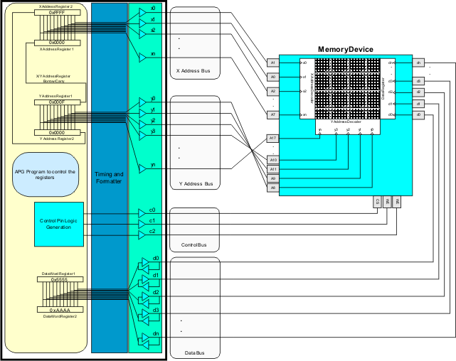

Algorithmic pattern test system architecture
Test systems that support algorithmic patterns have been traditionally implemented using a programmable finite state machine architecture. This fundamentally consists of one or more banks of programmable and linkable registers. This is called the Algorithmic Pattern Generator (APG). The registers are programmable with operations such as load, increment, decrement, shift, and rotate. The patterns applied to memory cores usually involve stepping through the memory core and applying a set of one or more operations to the data bits enabled by the address. In an APG-based test system, the registers are designed to contain x-address, y-address and data bit information. The x- and y-address registers have a borrow/carry linkage that allow for fast x-stepping and fast y-stepping patterns to be implemented. The individual bits of the registers are then mapped/gated to the driver/comparator for the test system channel connected to the respective pins of the device. That is, the x0 bit of the x-address register is gated to the pin of the device that is connected to the x0 bit of the x-address decoder of the memory core (see following figure).

The stepping sequence required by the pattern can be created by programming the address registers appropriately to count in the same sequence. Therefore, memory patterns are created using an algorithm by writing a program to control the execution of the APG.
In summary, the vector-based implementation is able to provide patterns for logic devices. It can also provide a limited ability to test memory devices. Memory patterns can require a large number of test system cycles to execute, especially for devices with large memory cores. Therefore, a test system with vector memory may not have enough vector memory available to store the entire pattern.
Algorithmic pattern‑based implementation is more suited to testing memory devices since an APG program can be created to execute patterns with large cycle counts. In contrast, since patterns for logic devices are not algorithmic in nature, an APG-based test system is not able to generate patterns for a logic device.